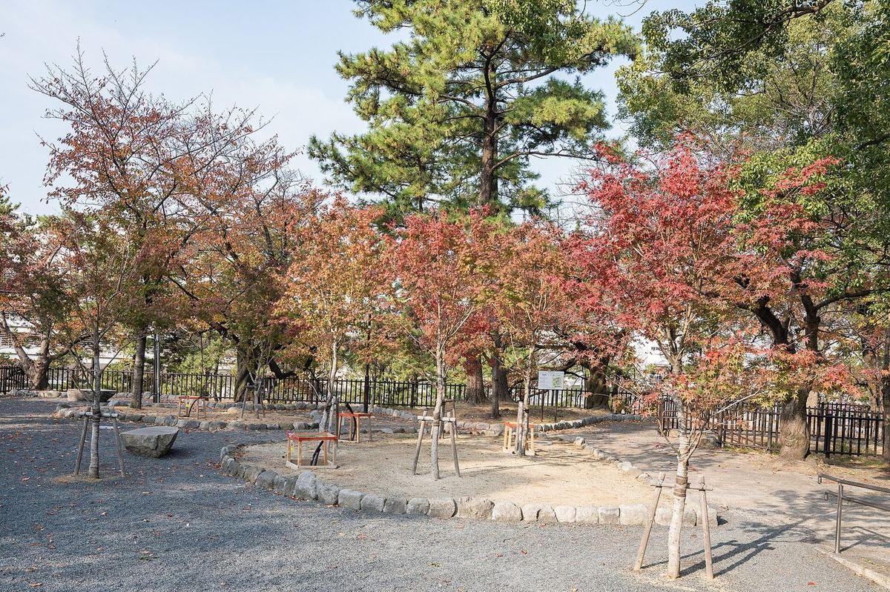
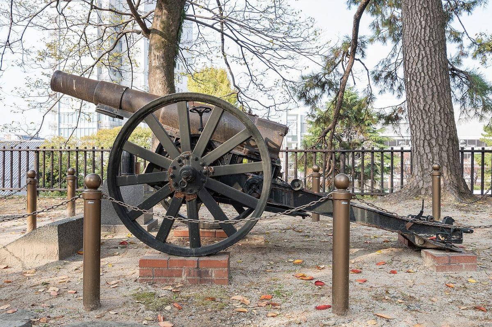
小倉／北九州
小倉城 · 勝山公園 · 河內藤園小倉城＋勝山公園係北九州最易去嘅紅葉點；城池同紅葉一齊入鏡好有氣勢。河內藤園秋開園窗口短，適合專程一日。
見頃
約 11/28 起
河內藤園
秋開園 11/21–29
交通
博多新幹線約 15–20 分
行程提示： 11/24–30 窗口正正撞正峰，優先度高。藤園要查當日開園／預約。
對照你嘅行程窗口，整理小倉、高千穗、福岡、鹿兒島／霧島神宮、由布院嘅見頃判斷，配上授權風景圖。
依例年季節＋公開紅葉情報推估，實際以色況為準。
| 地方 | 判定 |
|---|---|
| 小倉／北九州 | ★★ 正峰 |
| 高千穗 | ★★ 正峰 |
| 福岡 | ★ 好睇 |
| 鹿兒島市＋神宮 | ★ 可用 |
| 由布院 | △ 多數過峰 |


小倉城＋勝山公園係北九州最易去嘅紅葉點；城池同紅葉一齊入鏡好有氣勢。河內藤園秋開園窗口短，適合專程一日。
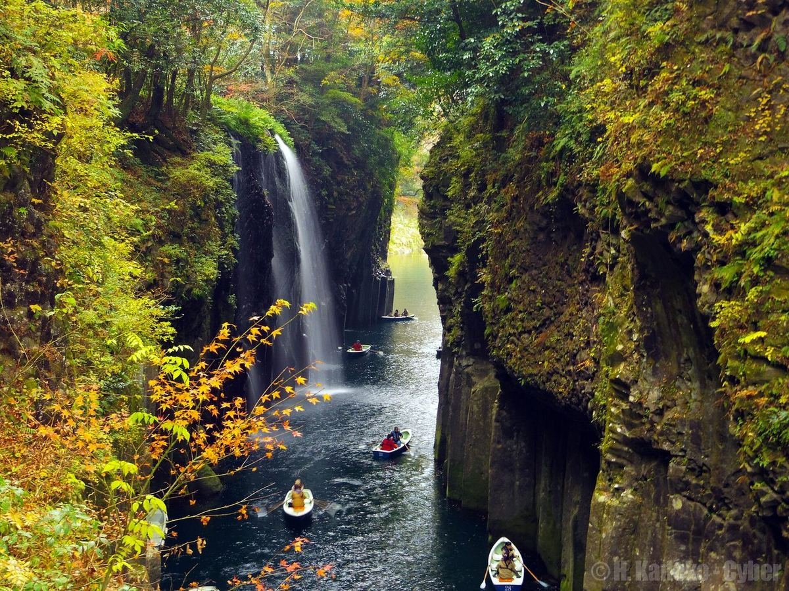
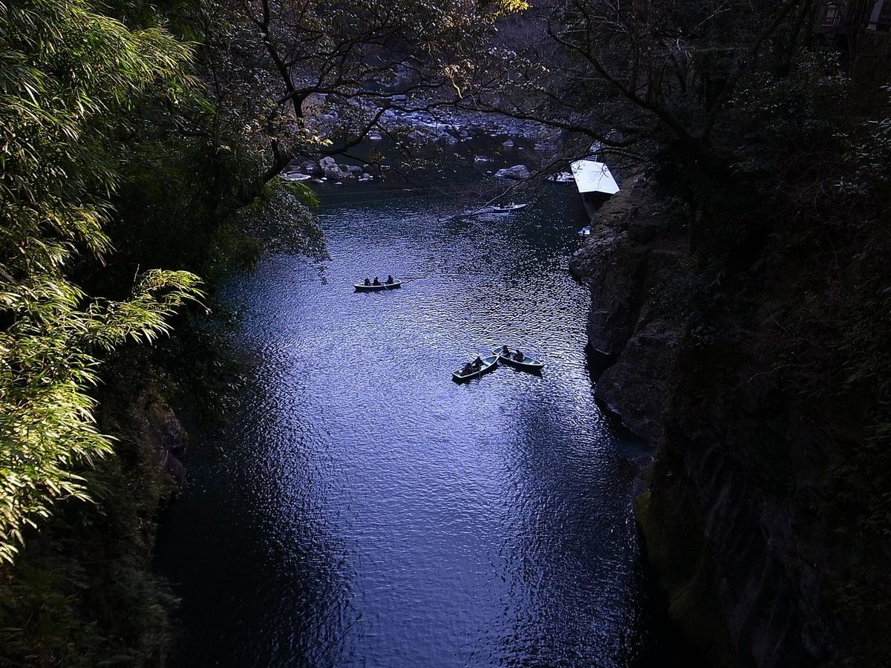
峽谷水面映紅葉係九州招牌畫面；划船位要早訂。夜燈期間更加夢幻，適合過夜或者晚返。
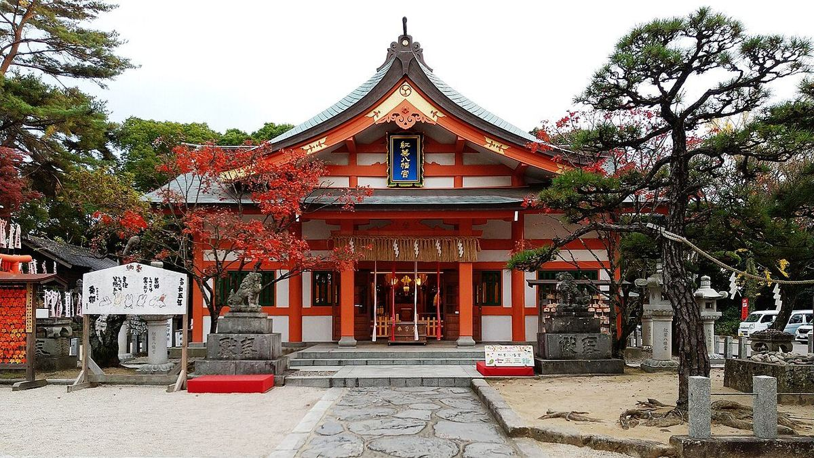
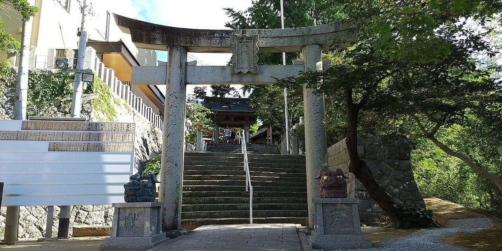
銀杏會喺月底前後轉黃；楓樹見頃偏 12 月初。紅葉八幡宮顧名思義，市區方便打卡；大濠／西公園適合散步。
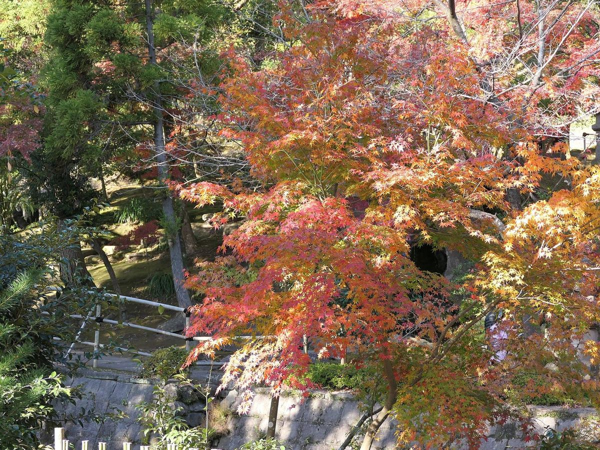
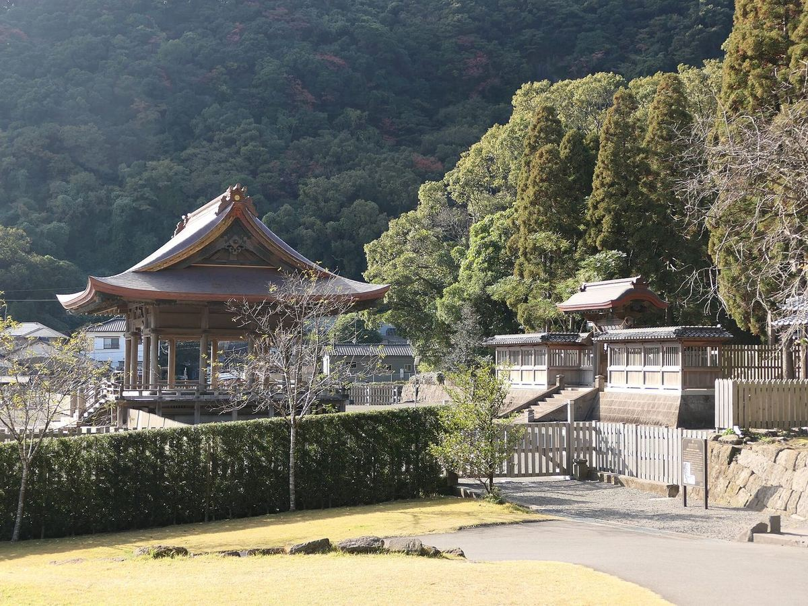
仙巖園庭園同櫻島景觀一流；市區紅葉約 11/28 至 12 月中。大浪池／高原一帶多數已過，唔好專程為紅葉上高原。
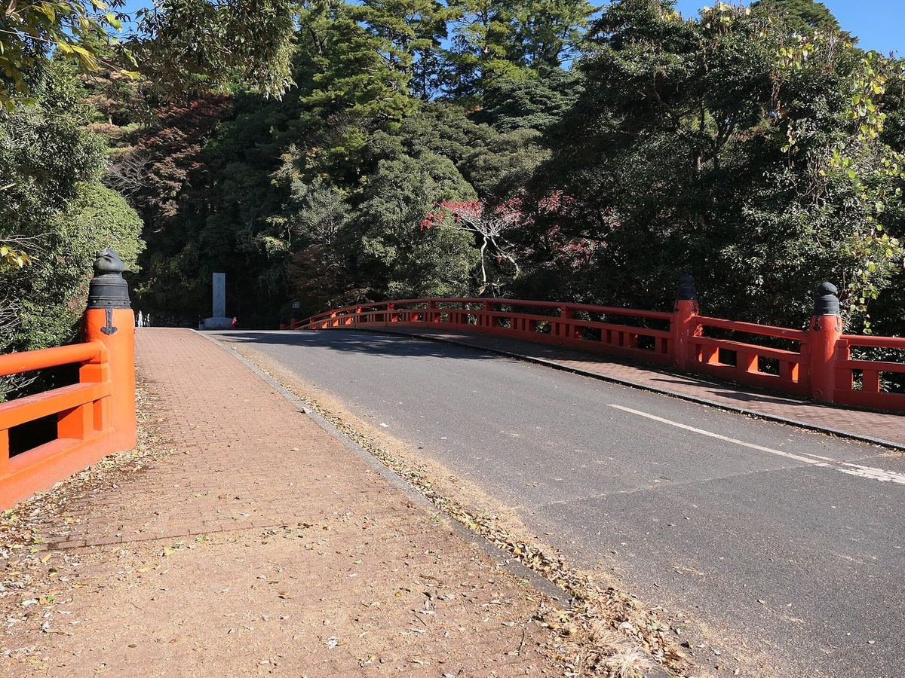
朱色社殿同參道樹木係經典畫面；神宮周邊 11 月尾仍可能見頃。重點係文化體驗同建築，紅葉係錦上添花。
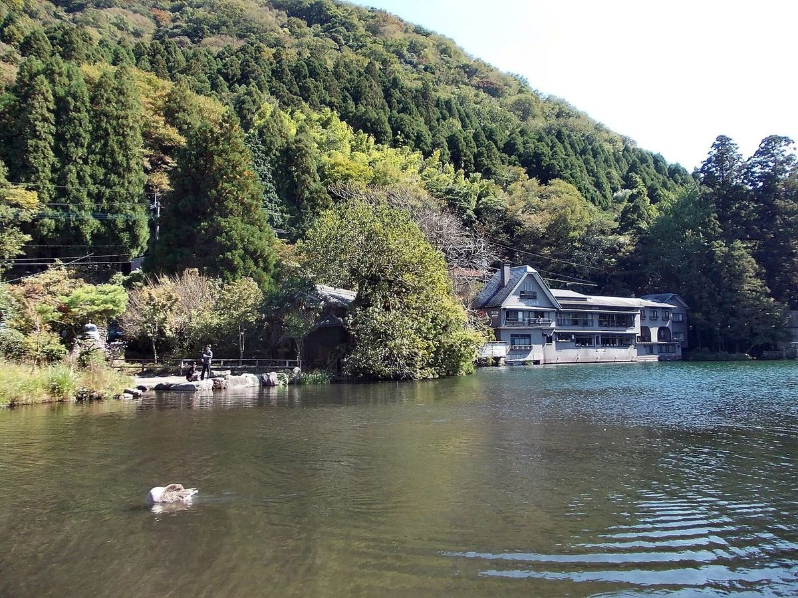
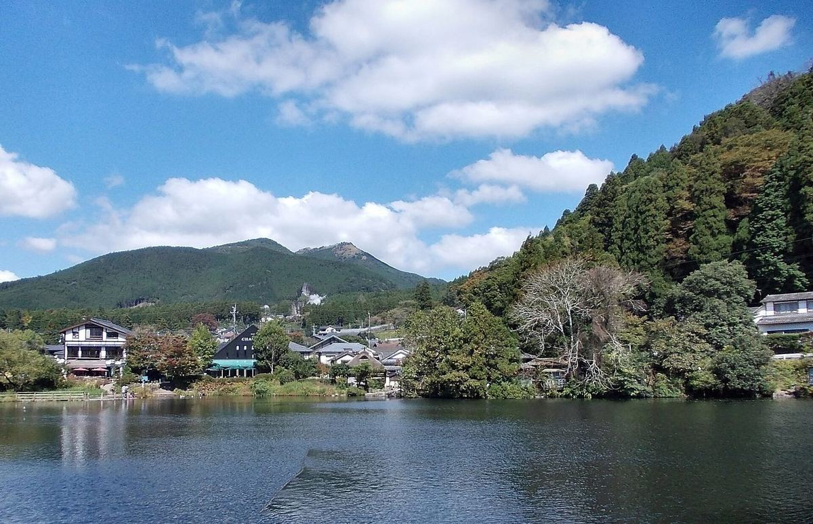
例年紅葉喺 11 上–中旬完結。你嘅日期多數已過峰——適合溫泉、散步、食，唔好當主紅葉目的。金鱗湖或有少量剩色。